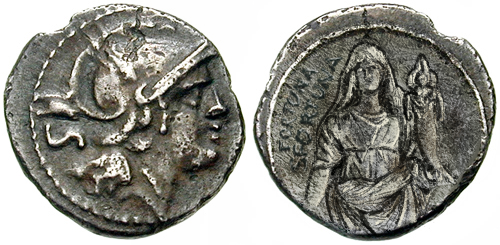

APP-246 shall be held in LR-79 in its designated locker, set on a foam pedestal, and always kept upright. This should be maintained with extreme caution monthly.
Under no circumstance shall a Personnel remove it from its locker without at least 3 Level-γ Personnel's backing and a written approval from a Level-δ Personnel.
Experiments and test using APP-246 should not include the following:
Use of APP-246 as currency
Use of APP-246 recreationally as a way to arbitrarily make a decision
Passing of APP-246 without express intent
Setting APP-246 on any of its faces unintentionally to "see what happens"
See Addendum for why these rules are enforced.
Retrieval:
It was retrieved after the town of █████████████, Italy was reported to have suffered from unexplainable heart attacks.
Once the SF Personnel arrived, no one dared to provide further information, fearing Fortuna's wrath.
Following an investigation, APP-246 was found stuck on a floor tiling, upright. Once removed, it toppled to the "heads" side, and the SF Personnel immediately noticed a hidden treasure beneath the floor tiling.
She then proceeded to set APP-246 "tails"-side up to investigate, only to fall over dead, caused by a heart attack. The next SF Personnel to approach APP-246 in this state and attempt to pick it up died similarly.
It was retrieved using a remote flying drone after clearing the area.
Entity Description:

APP-246
APP-246 is a silver sestertius from the Roman Empire, made of brass and 35mm in diameter.
The "heads" side depicts an as-of-yet unknown ruler, while the "tails" side represents Fortuna, the Roman goddess and personification of luck, surrounded by the words "fortuna, sfortuna" ("Luck, Unluck").
APP-246's weight distribution has been analysed to result in a 1 in 2.5 chance of landing on "heads", a 40 per cent chance.
Once APP-246 lands on its side, one of two outcomes occurs depending on the side.
If it lands on "heads", a favourable outcome will happen to the person who used it or the closest person in its vicinity, ranging from lucky coincidences to
If it lands on "tails", a terrible outcome will befall the person that used it or the closest person in its vicinity, usually death pertaining to the intended use, or a heart attack if no intent was made.
Due to its anomalous attributes and ease of misuse, it has been designated Vorsicht.
Addendum: Investigation-Log-246
Initial testing of APP-246 did not enforce the rules set in place as of ██-██-████, and as such, was unhinged.
This was orchestrated by Level-δ Personnel Dr.███████ Farren.
Test #1: Set down without any specific intent - Result: Heads
Personnel who set down APP-246 found a $50 bill he claims to have lost and only just remembered he misplaced in his coat pocket.
Dr. Farren's notes: "How did he not notice it poking out like a pocket square?"
Test #2: Use in a vending machine - Result: Tails
Personnel died as a result of the vending machine toppling over her.
Dr. Farren's notes: "Oof, that's definitely... a way to die. What would have happened if she was prepared?"
Test #3: Coin flip in deciding what to have for lunch - Result: Heads
Personnel who flipped APP-246 was pleased with the result, and later got triple the portion size of his favourite food during lunch break.
Dr. Farren's notes: "We didn't even tell the Nutrition Personnel to do that! Someone's getting a pay cut!"
Test #4: Coin flip using a machine - Result: Tails
Machine broke down, flinging the coin at a passing Personnel, piercing his head and killing him. APP-246 remained protruding upright from his skull undamaged.
Dr. Farren's notes: "...Someone HAS to die when it lands on tails?!"
Test #5: Turning the coin - Result: Heads
Personnel held APP-246 upright, then turned it so that it was "heads"-side up. Nothing of note happened.
Dr. Farren's notes: "Imagine if that worked."
Test #6-1: Giving the coin to another person - Result: Tails
Personnel handed APP-246 to another person without prior information regarding its anomalous attributes. Personnel recieving APP-246 died from a heart attack.
Dr. Farren's notes: "So you can kill someone with it? How does that even work?"
Test #6-2: Giving the coin to another person with prior knowledge - Result: Tails
Personnel handed APP-246 to another person with the express intent to activate its anomalous attributes. Personnel recieving APP-246 is unharmed.
Dr. Farren's notes: "...Does it depend on intent? Did it deem the prior test as "luck"?"
Test #6-3: Passing the coin amongst three people - Result: Tails
Personnel #1 handed APP-246 to another person with the express intent to activate its anomalous attributes.
Personnel #2 (who had no knowledge of APP-246) recieved APP-246 and is unharmed, then instructed to pass APP-246 to Personnel #3.
Personnel #3 recieved APP-246 and died from a heart attack.
Dr. Farren's notes: "OK, I had to try. I'll stop now."
 The A.P.P Foundation
The A.P.P Foundation